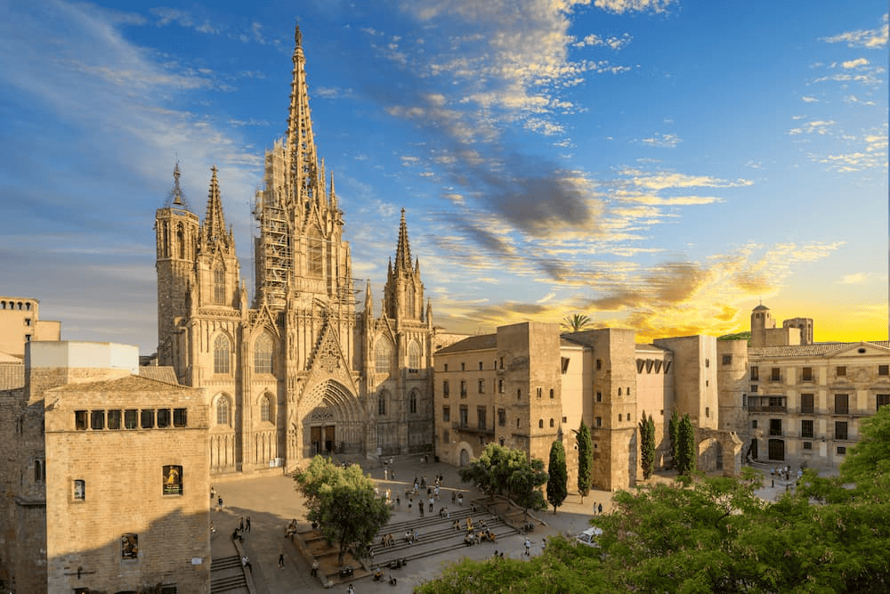
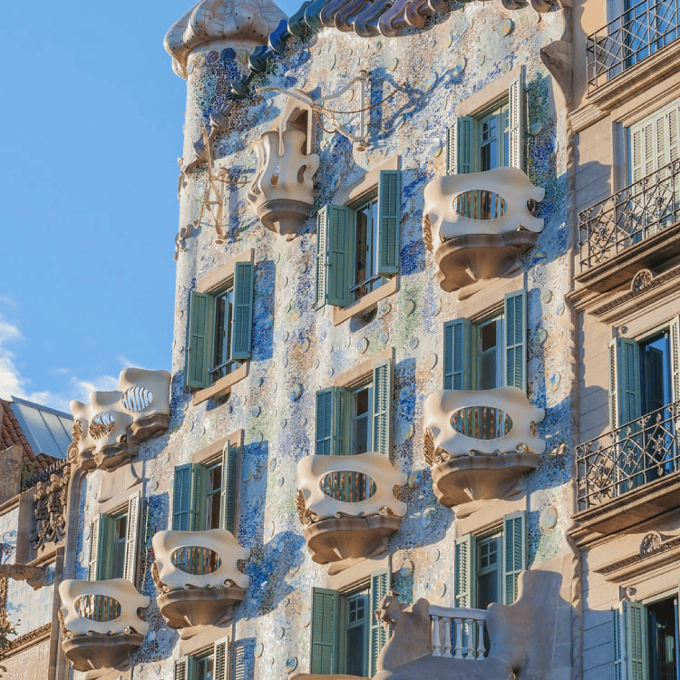

Barcelona es una ciudad llena de originales opciones de ocio que animan a visitarla una y otra vez. Abierta al mar Mediterráneo y afamada por Gaudí y su arquitectura modernista, Barcelona se revela como una de las capitales europeas más trendy.
La ciudad es un foco de nuevas tendencias en el mundo de la cultura, la moda y la gastronomía. Combina la creatividad de sus artistas y diseñadores con el respeto y cuidado por los locales tradicionales de siempre. En ella, conviven el encanto y la pausa de su casco histórico, la vanguardia de sus barrios más modernos y el ritmo urbanita de una de las ciudades más visitadas del mundo.
Catedral de Barcelona
Se halla situada en el lugar que ocupaba una basílica paleocristiana. Se empezó su construcción durante el románico pero fue finalmente acabada en el gótico, que es el estilo que predomina.
El exterior es sobrio, solamente decorado con los contrafuertes verticales. La puerta de San Ivo es una muestra representativa del llamado gótico catalán. Las naves interiores están casi a la misma altura, lo que da la impresión de estar en un solo recinto. Las capillas laterales tienen una galería superior, lo que confiere al conjunto mayor luminosidad y amplitud. El cimborrio está cubierto en el interior con un artesonado de madera. La fachada principal es de reciente construcción (finales del siglo XIX y principios del XX), aunque basada en un proyecto de 1408. Es de gran interés la puerta de acceso del claustro a la catedral y la capilla de Santa Lucía.

Casa Batlló
Es una de las joyas del modernismo que, por encargo de la familia Batlló, Gaudí remodeló por completo considerándose una obra nueva, al cambiar desde su fachada hasta su estructura interior.
El patio interior está cubierto por piezas cerámicas diseñadas por Gaudí, que empiezan en azul oscuro en la parte alta, bajando a tonalidades más claras de azul hasta llegar al final que son blancas. En el último piso hay un desván de estructura orgánica conformada por los típicos arcos catenarios de Gaudí. En la azotea se encuentra el lomo del dragón atravesado por una cruz de mármol de cuatro brazos y cuatro conjuntos de chimeneas.

Museo de Arte Contemporáneo de Barcelona
El museo exhibe obras de arte creadas en los últimos 75 años.
El MACBA se inauguró en 1995 y fue diseñado por el norteamericano Richard Meier. En su interior se exponen obras de artistas contemporáneos como Antoni Tàpies, Paul Klee, Francesc Torres, Mario Merz o Zush. Su colección se centra en el legado de la segunda mitad del siglo XX, y busca establecer una memoria crítica del arte de ese periodo, a partir de un punto de vista que tenga en cuenta la realidad cultural y política de una ciudad concreta como Barcelona.